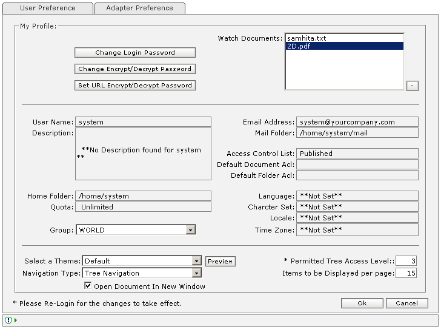

| What is User Preference? |
|
 |
User Preferences page |
| General User Preference Information |
| Name | Min Length | Max Length | Description | Comments |
|---|---|---|---|---|
| Login Password | - | - | Facilitates the logged-in user to change the password.
|
- |
| Watch Documents | - | - | A List of documents to which the user has added watch.
|
- |
| User Name | - | - | Unique User Name. | Non Editable |
| Description | - | - | User's Description. | Non Editable |
| Home Folder | - | - | Home folder for the logged-in user. | Non Editable |
| Quota | - | - | User's quota.
|
Non Editable |
| Group | - | - | Group to which logged-in user is assigned to. | Non Editable |
| Email Address | - | - | Mailing address of the user. | Non Editable |
| Mail Folder | - | - | Logged-in User's mailing folder. | Non Editable |
| Access Control List | - | - | Logged-in User's Access Control List. | Non Editable |
| Default Document ACL | - | - | ACL to be applied by default when the user uploads Document. | Non Editable |
| Default Folder ACL | - | - | ACL to be applied by default when the user creates Folder. | Non Editable |
| Language | - | - | Language applications will use while interacting. | Non Editable |
| Character Set | - | - | Character set required to display the selected language. | Non Editable |
| Locale | - | - | Locale base on the selected language. | Non Editable |
| Time Zone | - | - | User's time zone. | Non Editable |
| Permitted Tree Access Level | - | - | Allows fetching number of levels of the tree. | Required |
| Items to be displayed per page | - | - | Allows the number of rows to be displayed per page. | Required |
| Select a Theme | - | - | Select the theme for User interface. | Required |
| Preview | - | - | Press 'Preview' to see the preview of the theme selected. | - |
| Open Document In New Window | - | - | Check this option to enable document viewing in a new window, else document opens in same frame. | - |
| Encryption/decryption Set Password | - | - | Facilitates the logged-in user to set or change the encryption/decryption password.
|
- |
| Set URL Encrypt/Decrypt Password | - | - | Facilitates the System-Admin to set the URL encryption/decryption password.
|
For System-Admin access only, once set, cannot be altered. |
| 'Ok' button | - | - | Press 'Ok' to save the Modified Preferences, the Preferences will be saved and Webtop page will appear. | - |
| 'Cancel' button | - | - | Press 'Cancel' to abort Modifying User Preferences. | - |